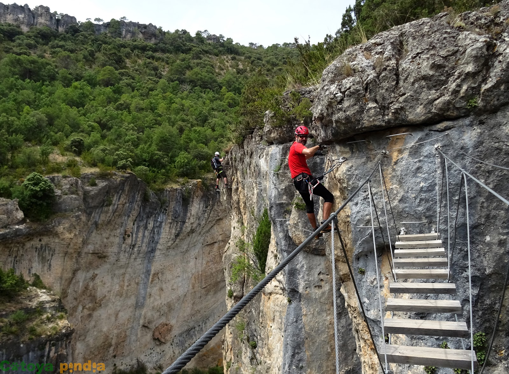

H
O
B
Identificarse
Perfil
Hobies
Retro Gamming
Arte
Lectura
Senderismo
Tiendas Locales
Sugerencias
Preguntas Frecuentes
Tus Rutas
Rutas
Hechas
Pendientes
Recomendadas
Guia
Andalucia
Aragon
Asturias
Baleares
Canarias
Cantabria
Castilla y Leon
Castilla la Mancha
Cataluña
c. Valenciana
Extremadura
Galicia
C. Madrid
R. Murcia
Navarra
Pais Vasco
La Rioja
Ceuta y Melilla
Con Historia
Información Ruta
Nombre
Localización
Distancia
Duración
Nº opciones
Dificultad
Geocaching
Valoración
Descripcion
La vía Ferrata Estrecho de Priego nos ofrece las mejores panorámicas del Estrecho de Priego. Un trazado infantil que nos ofrece una larga vertical con una entretenida travesía horizontal. Todo ello entre puentes tibetanos y pasarelas de tablas que vuelan por las cornisas de los Barrales para guiarnos a otros caminos con los que podemos combinar nuevas aventuras.
Tus fotos

Anterior
Siguiente